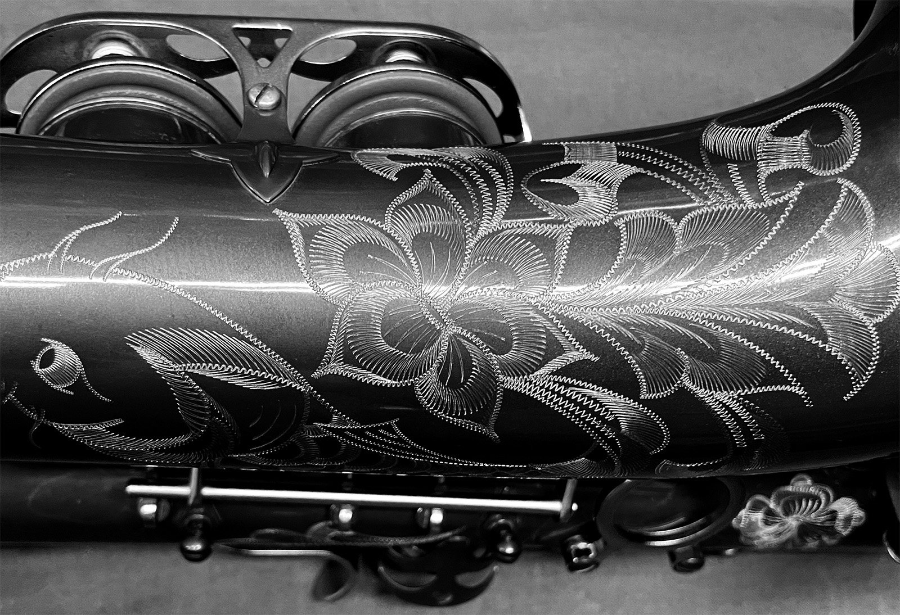

{{ item.content }}
「吹奏靈魂・成就匠心」
「音色與工藝的結晶」
「只為一吹驚人」
「音色與工藝的結晶」
We
are
technical
Implement
professionals

勝風樂器｜Samphone
勝風樂器有限公司成立於1995年，創辦人原本是一位專業的樂器加工師傅，長年專注於薩克斯風零件的焊接與製造。早期主要承接國內外品牌的代工業務，累積了深厚的製程經驗與技術。
他不甘於只做產品的一部分，決心挑戰整支樂器的全製程，打造出屬於「他自己」的薩克斯風。從管體彎製、結構調整，到按鍵配置與調音檢測，他一步步建立起獨立的製作流程。
勝風因此完成轉型，專注於製作音色穩定、結構耐用的手工薩克斯風，並持續優化每一道工序。從設計、材料選擇、聲學測試，到最終裝配，皆由自家工坊完成，確保品質一致與品牌獨立。
對勝風來說，樂器不只是產品，更是承載演奏者情感與表達的聲音載體。公司成立的初衷源自創辦人對音色與工藝的堅持，期望透過完整自主的製程，打造出值得信賴且具靈魂的樂器。
勝風的起點、師傅的道路
勝風的創辦人，起初是一位專注於薩克斯風零件加工的師傅。二十出頭進入樂器代工產業，從金屬焊接做起。雖然工作繁瑣單調，也讓他在尺寸和結構上越來越熟練。當時他沒想過要製作整支樂器，只想把每道工序做到最好。
幾年後，他成立小型加工廠，承接本地和國際品牌的零件外包。這些經驗讓他對薩克斯風的理解越來越深，知道哪些設計容易出問題，哪些結構最穩。後來，他決定挑戰整支樂器的設計與製作，從頭到尾都親手完成。
1995年，他創立「勝風樂器」，正式從代工轉型為自有品牌。初期規模雖小、設備有限，但每支樂器皆由他親自監製。憑藉焊接出身背景，他對音色穩定與耐用性有極高標準，從不妥協設計細節。對他而言，這不只是製造，更是用二十多年經驗打造出的理想薩克斯風。

click Open
click Close
{{ item.title }}
中音薩克斯風
(Alto Saxophone)
(Alto Saxophone)
次中音薩克斯風
(Tenor Saxophone)
(Tenor Saxophone)
薩克斯風配件